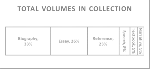

Types of Visualizations
¶ 1 Leave a comment on paragraph 1 0 Up until this point, we have used the phrase information visualization without explaining it or differentiating it from other related terms. We remedy that here: information visualization is the mapping of abstract data to graphic variables in order to make a visual representation. We use these representations to augment our abilities to read data; we cannot hope to intuit all relationships in our data by memory and careful consideration alone, and visualizations make those relationships more apparent.
¶ 2 Leave a comment on paragraph 2 0 An information visualization differs from a scientific visualization in the data it aims to represent, and in how that representation is instantiated. Scientific visualizations maintain a specific spatial reference system, whereas information visualizations do not. Visualizations of molecules, weather, motors, and brains are all scientific visualizations because they each already have a physical instantiation, and their visual form is preserved in the visualization. Bar charts, scatter plots, and network graphs, on the other hand, are all information visualizations, because they lay out in space data which do not have inherent spatiality. An infographic is usually a combination of information and scientific visualizations embedded in a very explicit narrative and marked up with a good deal of text.
¶ 3 Leave a comment on paragraph 3 0 These types are fluid, and some visualizations fall between categories. Most information visualizations, for example, contain some text, and any visualization we create is imbued with the narrative and purpose we give it, whether or not we realize we have done so. A truly “objective” visualization, where the data speak for themselves, is impossible. Our decisions on how to encode our data and which data to present deeply influence the understanding readers take away from a visualization.
¶ 4 Leave a comment on paragraph 4 0 Visualizations also vary between static, dynamic, and interactive. Experts in the area have argued that the most powerful visualizations are static images with clear legends and a clear point, although that may be changing with increasingly powerful interactive displays which give users impressive amounts of control over the data. Some of the best modern examples come from the New York Times visualization team. Static visualizations are those which do not move and cannot be manipulated; dynamic visualizations are short animations which show change, either over time or across some other variable; interactive visualizations allow the user to manipulate the graphical variables themselves in real-time. Often, because of change blindness, dynamic visualizations may be confusing and less informative than sequential static visualizations. Interactive visualizations have the potential to overload an audience, especially if the controls are varied and unintuitive. The key is striking a balance between clarity and flexibility.
¶ 5 Leave a comment on paragraph 5 0 There is more to visualization than bar charts and scatter plots. Scholars are constantly creating new variations and combinations of visualizations, and have been for hundreds of years. An exhaustive list of all the ways information has or can be visualized would be impossible, although we will attempt to explain many of the more common varieties. Our taxonomy is influenced by visualizing.org, a website dedicated to cataloguing interesting visualizations, but we take examples from many other sources as well.
Statistical Charts & Time Series
¶ 6 Leave a comment on paragraph 6 0 Statistical charts are likely those that will be most familiar to any audience. When visualizing for communication purposes, it is important to keep in mind which types of visualizations your audience will find legible. Sometimes the most appropriate visualization for the job is the one that is most easily understood, rather than the one that most accurately portrays the data at hand. This is particularly true when representing many abstract variables at once: it is possible to create a visualization with color, size, angle, position, and shape all representing different aspects of the data, but it may become so complex as to be illegible.
¶ 7 Leave a comment on paragraph 7 0 5.7
{kind=link}
¶ 9 Leave a comment on paragraph 9 0 Figure 5.7 is a basic bar chart of the amount of non-fiction books held in some small collection, categorized by genre. One dimension of data is the genre, which is qualitative, and each is being compared along a second category, number of books, which is quantitative. Data with two dimensions, one qualitative and one quantitative, usually are best represented as bar charts such as this.
¶ 10 Leave a comment on paragraph 10 0 Sometimes you want to visualize data as part of a whole, rather than in absolute values. In these cases, with the same qualitative/quantitative split in data, most will immediately rely on pie charts such as the one in figure 5.8. This is often a poor choice: pie charts tend to be cluttered–especially as the number of categories increase–and people have a difficult time interpreting the area of a pie slice.
¶ 11 Leave a comment on paragraph 11 0 5.8
{kind=link}
¶ 13 Leave a comment on paragraph 13 0 The same data can be rendered as a stacked bar chart (figure 5.9), which produces a visualization with much less clutter. This chart also significantly decreases the cognitive load of the reader as well, as they merely need to compare bar length rather than try to internally calculate the area of a slice of pie.
¶ 14 Leave a comment on paragraph 14 0 5.9
{kind=link}
¶ 16 Leave a comment on paragraph 16 0 When there are two quantitative variables to be represented, rather than a quantitative and a qualitative, the visualization most often useful is the line graph or scatterplot. Volumes of books in a collection ordered by publication year, for example, can be expressed with the year on the horizontal axis (x-axis) and the number of books on the vertical axis (y-axis). The line drawn between each (x,y) point represents our assumption that the data points are somehow related to each other, and an upward or downward trend is somehow meaningful (figure 5.10).
¶ 17 Leave a comment on paragraph 17 0 5.10
{kind=link}
We could replace the individual lines between years with a trend line, one that shows the general upward or downward trend of the data points over time (figure 5.11). This reflects our assumption that not only are the year-to-year changes meaningful, but that there is some underlying factor that is causing the total number of volumes to shift upward or downward across the entire timespan. In this case, it seems that on average the number of books collection seems to be decreasing as publication dates approach the present day, which can easily be explained by the lag in time it might take before the decision is made to purchase a book for the collection.
¶ 19 Leave a comment on paragraph 19 0 5.11
{kind=link}
¶ 21 Leave a comment on paragraph 21 0 Scatterplots have the added advantage of being amenable to additional dimensions of data. The scatterplot in 5.12 compares three dimensions of data: genre (qualitative), number of volumes of each genre in the collection (quantitative), and average number of pages per genre (quantitative). It shows us, for examples, that the collection contains quite a few biographies, and biographies have much fewer pages on average than reference books. The scatterplot also shows us that it is fairly useless; there are no discernible trends or correlations between any of the variables, and no new insights emerge from viewing the visualization.
¶ 22 Leave a comment on paragraph 22 0 5.12
{kind=link}
The histogram is a visualization that is both particularly useful and extremely deceptive for the unfamiliar. It appears to be a vertical bar chart, but instead of the horizontal axis representing categorical data, a histogram’s horizontal axis usually also represents quantitative data, sub-divided in a particular way. Another way of saying this is that in a bar chart, the categories can be moved left or right without changing the meaning of the visualization, whereas in a histogram, there is a definite order to the categories of the bar. For example, the figure below represents the histogram of grade distributions in a college class. It would not make sense for the letter grades to be in any order but the order presented below. Additionally, histograms always represent the distribution of certain values; that is, the height of the bar can never represent something like temperature or age, but instead represents the frequency with which some value appears. In figure 5.13, bar height represents the frequency with which students in a college course get certain grades.
¶ 24 Leave a comment on paragraph 24 0 5.13
{kind=link}
¶ 26 Leave a comment on paragraph 26 0 The histogram (figure 5.13) shows that the distribution of students’ grades does not follow a true bell curve, with as many As as Fs in the class. This is not surprising for anyone who has taught a course, but it is a useful visualization for representing such divergences from expected distributions.
¶ 27 Leave a comment on paragraph 27 0 Despite their seeming simplicity, these very basic statistical visualizations can be instigators for extremely useful analyses. The visualization in figure 5.14 shows the changing frequency of the use of “aboue” and “above” (spelling variations of the same word) in English printed text from 1580-1700. Sam Kaislaniemi noted in a blog post how surprising it is that the spelling variation seems to have changed so drastically in a period of two decades. This instigated further research, leading to an extended blog post and research into a number of other datasets from the same time period.
¶ 28 Leave a comment on paragraph 28 0 5.14
{kind=link}
Maps
¶ 30 Leave a comment on paragraph 30 0 As content is added to a map, it may gain a layer or layers of information visualization. One of the most common geographic visualizations is the choropleth, where bounded regions are coloured and shaded to represent some statistical variable (figure 5.15). Common uses for choropleths include representing population density or election results. The below visualization, created by Mike Bostock, colors counties by unemployment rate, with darker counties having higher unemployment. Choropleth maps should be used for ratios and rates rather than absolute values, otherwise larger areas may be disproportionately colored darker due merely to the fact that there is more room for people to live.
¶ 31 Leave a comment on paragraph 31 0 5.15
{kind=link}
¶ 33 Leave a comment on paragraph 33 0 For some purposes, choropleths provide insufficient granularity for representing density. In the 1850s, a cholera outbreak in London left many concerned and puzzled over the origin of the epidemic. Dr. John Snow created a dot density map (Figure 5.16) showing the location of cholera cases in the city. The visualization revealed that most cases were around a single water pump, suggesting the outbreak was due to a contaminated water supply.
¶ 34 Leave a comment on paragraph 34 0 5.16
{kind=link}
¶ 36 Leave a comment on paragraph 36 0 For representing absolute values on maps, you should instead consider using a proportional symbol map. The map depicted in figure 5.17, created by Mike Bostock, shows the populations of some of the United States’ largest cities. These visualizations are good for directly comparing absolute values to one another, when geographic region size is not particularly relevant. Keep in mind that often, even if you plan on representing geographic information, the best visualizations may not be on a map. In this case, unless you are trying to show that the higher density of populous areas is in the Eastern U.S., you may be better served by a bar chart, with bar heights representative of population size. That is, the latitude and longitude of the cities is not particularly important in conveying the information we are trying to get across.
¶ 37 Leave a comment on paragraph 37 0 5.17
{kind=link}
¶ 39 Leave a comment on paragraph 39 0 Data that continuously change throughout geographic space (e.g. temperature or elevation) require more complex visualizations. The most common in this case are known as isopleth, isarithmic, or contour maps, and they represent gradual change using adjacent, curving lines. Note that these visualizations work best for data that contain smooth transitions. Topographic maps (figure 5.18) use adjacent lines to show gradual changes in elevation. The closer together the lines, the more rapidly the elevation changes.
¶ 40 Leave a comment on paragraph 40 0
¶ 41 Leave a comment on paragraph 41 0 5.18
{kind=link}
¶ 43 Leave a comment on paragraph 43 0 Geographic maps have one feature that sets them apart from most other visualizations: we know them surprisingly well. While few people can label every U.S. state or European country on a map accurately, we know the shape of the world enough that we can take some liberties with geographic visualizations that we cannot take with others. Cartograms are maps that distort the basic spatial reference system of latitude and longitude in order to represent some statistical value. They work because we know what the reference is supposed to look like, so we can immediately intuit how cartogram results differ from the “base map” we are familiar with. The cartogram depicted in Figure 5.19, created by M.E.J. Newman, distorts state sizes by their population, and colors the states by how they voted in the 2008 U.S. presidential election.[1] It shows that, although a greater area of the United States may have voted Republican, those areas tended to be quite sparsely populated.
¶ 44 Leave a comment on paragraph 44 0 5.19
{kind=link}
¶ 46 Leave a comment on paragraph 46 0 Maps are not necessarily always the most appropriate visualizations for the job, but when they are used well, they can be extremely informative.
¶ 47 Leave a comment on paragraph 47 0 In the humanities, map visualizations will often need to be of historical or imagined spaces. While there are many convenient pipelines to create custom data overlays of maps, creating new maps entirely can be a gruelling process with few easy tools to support it. It is never as simple as taking a picture of an old map and scanning it into the computer; the aspiring cartographer will need to painstakingly match points on an old scanned map to their modern latitude and longitude, or to create new map tiles entirely. The below visualizations are two examples of such efforts: the first (figure 5.20) is a reconstructed map of the ancient world which includes aqueducts, defense walls, sites, and roads by Johan Åhlfeldt with Pelagios,[2] and the second (figure 5.21) is a reconstructed map of Tolkien’s Middle Earth by Emil Johansson.[3] Both are examples of extremely careful humanistic work that involved both additional data layers, and changes to the base map.
¶ 48 Leave a comment on paragraph 48 0 5.20
{kind=link}
¶ 50 Leave a comment on paragraph 50 0 5.21
{kind=link}
Hierarchies & Trees
¶ 52 Leave a comment on paragraph 52 0
¶ 54 Leave a comment on paragraph 54 0 The most common forms of visualization for this type of data are vertical and horizontal trees. The horizontal tree in figure 5.22, made in D3.js, shows the children and grandchildren of Josiah Wedgwood. These visualizations are extremely easy to read by most people, and have been used for many varieties of hierarchical data. Trees have the advantage of more legible than most other network visualizations, but the disadvantage of being fairly restrictive in what they can visualize.
¶ 55 Leave a comment on paragraph 55 0 5.22
{kind=link}
¶ 57 Leave a comment on paragraph 57 0 Another form of hierarchical visualization, called a radial tree, is often used to show ever-branching structures, as in an organization. The radial tree in figure 5.23, a 1924 organization chart in a volume on management statistics by W.H.Smith,[4] emphasizes how power in the organization is centralized in one primary authority. It is important to remember that stylistic choices can deeply influence the message taken from a visualization. Horizontal and radial trees can represent the same information, but the former emphasizes change over time, whereas the latter emphases the centrality of the highest rung on the hierarchy. Both are equally valid, but they send very different messages to the reader.
¶ 58 Leave a comment on paragraph 58 0 5.23
{kind=link}
¶ 60 Leave a comment on paragraph 60 0 One of the more recently popular hierarchical visualizations is the treemap designed by Ben Shneiderman. Treemaps use nested rectangles to display hierarchies, the areas of which represent some quantitative value. The rectangles are often coloured to represent a third dimension of data, either categorical or quantitative. The visualization in figure 5.24 is of Washington D.C.’s budget in 2013, separated into governmental categories. Rectangles are sized proportionally to the amount of money received per category in 2013, and coloured by the percentage that amount had changed since the previous fiscal year.
¶ 61 Leave a comment on paragraph 61 0 5.24
{kind=link}
Networks & Matrices
¶ 62 Leave a comment on paragraph 62 0 Network visualizations can be complex and difficult to read. Nodes and edges are not always represented as dots and lines, and even when they are, the larger the network, the more difficult they are to decipher. The reasons behind visualizing a network can differ, but in general, visualizations of small networks are best at allowing the reader to understand individual connections, whereas visualizations of large networks are best for revealing global structure.
¶ 63 Leave a comment on paragraph 63 0 Network visualizations, much like network analysis, may or may not add insight depending on the context. A good rule of thumb is to ask a network-literate friend reading the final product whether the network visualization helps them understand the data or the narrative any more than the prose alone. It often will not. We recommend not including a visualization of the data solely for the purpose of revealing the complexity of the data at hand, as it conveys little information, and feeds into a negative stereotype of network science as an empty methodology. We will go into network visualizations in some depth in Chapter 6, and the reader may wish to skip ahead.
¶ 64 Leave a comment on paragraph 64 0 In fact, we recommend that, where possible, complex network visualizations should be avoided altogether. It is often easier and more meaningful for a historical narrative to simply provide a list of the most well-connected nodes, or, e.g., a scatterplot showing the relationship between connectivity and vocation. If the question at hand can be more simply answered with a traditional visualization that historians are already trained to read, it should be.
Small Multiples & Sparklines
¶ 65 Leave a comment on paragraph 65 0 Small multiples and sparklines are not exactly different types of visualization than what have already been discussed, but they represent a unique way of presenting visualizations that can be extremely compelling and effective. They embody the idea that simple visualizations can be more powerful than complex ones, and that multiple individual visualizations can often be more easily understood than one incredibly dense visualization.
¶ 66 Leave a comment on paragraph 66 0 Small multiples are exactly what they sound like: the use of multiple small visualizations adjacent to one another for the purposes of comparison. They are used in lieu of animations or one single extremely complex visualization attempting to represent the entire dataset. Figure 5.25, by Brian Abelson of OpenNews, is of cold- and warm-weather anomalies in the United States since 1964.[5] Cold weather anomalies are in blue, and warm weather anomalies are in read. This visualization is used to show increasingly extreme warm weather due to global warming.
¶ 67 Leave a comment on paragraph 67 0 5.25
{kind=link}
¶ 69 Leave a comment on paragraph 69 0 Sparklines, a term coined by Edward Tufte, are tiny line charts with no axis or legend. They can be used in the middle of a sentence, for example to show a changing stock price over the last week ( ), which will show us general upward or downward trends, or in small multiples to compare several values. Microsoft Excel has a built-in sparkline feature for just such a purpose. Figure 5.26 is a screenshot from Excel, showing how sparklines can be used to compare the frequency of character appearances across different chapters of a novel.
¶ 70
Leave a comment on paragraph 70 0
 5.26
5.26
¶ 72 Leave a comment on paragraph 72 0 The sparklines above quickly show Carol as the main character, and that two characters were introduced in Chapter 3, without the reader needing to look at the numbers in the rest of the of the spreadsheet.
Choosing the Right Visualization
¶ 73 Leave a comment on paragraph 73 0 There is no right visualization. A visualization is a decision you make based on what you want your audience to learn. That said, there are a great many wrong visualizations. Using a scatterplot to show average rainfall by country is a wrong decision; using a bar chart is a better one. Ultimately, your choice of which type of visualization to use is determined by how many variables you are using, whether they are qualitative or quantitative, how you are trying to compare them, and how you would like to present them. Creating an effective visualization begins by choosing from one of the many appropriate types for the task at hand, and discarding inappropriate types as necessary. Once you have chosen the form your visualization will take, you must decide how you will create the visualization: what colors will you use? What symbols? Will there be a legend? The following sections cover these steps.
¶ 74 Leave a comment on paragraph 74 0 [1] M.E.J. Newman, ‘Maps of the 2008 US Presidential Election Results’ 2008 http://www-personal.umich.edu/~mejn/election/2008/ One may also download Newman’s data to explore.
¶ 75 Leave a comment on paragraph 75 0 [2] See http://pelagios.dme.ait.ac.at/maps/greco-roman/. This map is discussed in detail in Johan Åhlfeldt ‘A digital map of the Roman Empire’ 19 September 2012 http://pelagios-project.blogspot.ca/2012/09/a-digital-map-of-roman-empire.html
¶ 76 Leave a comment on paragraph 76 0 [3] http://lotrproject.com/map/ For a discussion about this project, see http://lotrproject.com/about/
¶ 77 Leave a comment on paragraph 77 0 [4] W. H. Smith., Graphic Statistics in Management (McGraw-Hill Book Company, New York, ed. First, 1924); this is reproduced on the Visual Complexity database at http://www.visualcomplexity.com/vc/project.cfm?id=10
¶ 79 Leave a comment on paragraph 79 0 [5] See Brian Abelson, ‘Finding Evidence of Climate Change in a Billion Rows of Data’, Source Open News April 22, 2014 https://source.opennews.org/en-US/articles/finding-evidence-climate-change-billion-rows-data/ for details.
Comments
Comments are closed
0 Comments on the whole page
0 Comments on paragraph 1
0 Comments on paragraph 2
0 Comments on paragraph 3
0 Comments on paragraph 4
0 Comments on paragraph 5
0 Comments on paragraph 6
0 Comments on paragraph 7
0 Comments on paragraph 8
0 Comments on paragraph 9
0 Comments on paragraph 10
0 Comments on paragraph 11
0 Comments on paragraph 12
0 Comments on paragraph 13
0 Comments on paragraph 14
0 Comments on paragraph 15
0 Comments on paragraph 16
0 Comments on paragraph 17
0 Comments on paragraph 18
0 Comments on paragraph 19
0 Comments on paragraph 20
0 Comments on paragraph 21
0 Comments on paragraph 22
0 Comments on paragraph 23
0 Comments on paragraph 24
0 Comments on paragraph 25
0 Comments on paragraph 26
0 Comments on paragraph 27
0 Comments on paragraph 28
0 Comments on paragraph 29
0 Comments on paragraph 30
0 Comments on paragraph 31
0 Comments on paragraph 32
0 Comments on paragraph 33
0 Comments on paragraph 34
0 Comments on paragraph 35
0 Comments on paragraph 36
0 Comments on paragraph 37
0 Comments on paragraph 38
0 Comments on paragraph 39
0 Comments on paragraph 40
0 Comments on paragraph 41
0 Comments on paragraph 42
0 Comments on paragraph 43
0 Comments on paragraph 44
0 Comments on paragraph 45
0 Comments on paragraph 46
0 Comments on paragraph 47
0 Comments on paragraph 48
0 Comments on paragraph 49
0 Comments on paragraph 50
0 Comments on paragraph 51
0 Comments on paragraph 52
0 Comments on paragraph 53
0 Comments on paragraph 54
0 Comments on paragraph 55
0 Comments on paragraph 56
0 Comments on paragraph 57
0 Comments on paragraph 58
0 Comments on paragraph 59
0 Comments on paragraph 60
0 Comments on paragraph 61
0 Comments on paragraph 62
0 Comments on paragraph 63
0 Comments on paragraph 64
0 Comments on paragraph 65
0 Comments on paragraph 66
0 Comments on paragraph 67
0 Comments on paragraph 68
0 Comments on paragraph 69
0 Comments on paragraph 70
0 Comments on paragraph 71
0 Comments on paragraph 72
0 Comments on paragraph 73
0 Comments on paragraph 74
0 Comments on paragraph 75
0 Comments on paragraph 76
0 Comments on paragraph 77
0 Comments on paragraph 78
0 Comments on paragraph 79